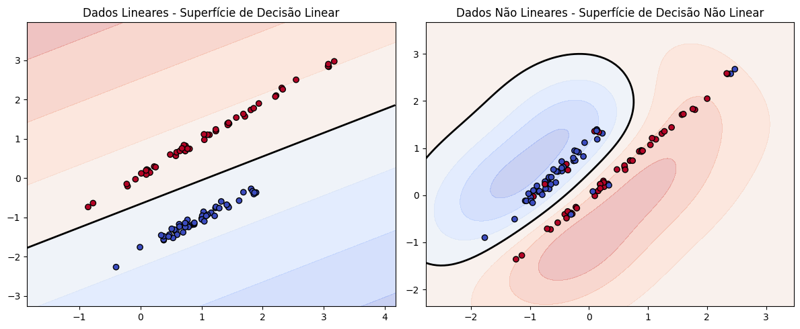

Capítulo 2: Classificadores lineares#
Os classificadores lineares têm como princípio a separação de classes por meio de funções discriminantes, que são expressas como uma combinação linear entre coeficientes e as características dos padrões. Esses classificadores se destacam por sua simplicidade e eficiência computacional. A definição dos coeficientes, conhecidos como “pesos”, varia de acordo com o método utilizado. No entanto, todos compartilham o mesmo objetivo: encontrar a melhor configuração possível para realizar a classificação com precisão.
Classificadores e problemas lineares#
Pode-se definir um classificador como linear desde que o processo de discriminação das classes abrangidas pelo problema seja conduzida através de \(\textbf{superfícies de decisão lineares}\), ou seja, a decisão sobre a qual classe um dado pertence é feita com base em uma combinação linear de suas características.
Uma superfície de decisão linear consiste no lugar geométrico que torna nula uma função discriminante linear. Genericamente, uma função linear é dada por:
\(\begin{equation} g(\textbf{x})=\textbf{w}^{T}\textbf{x} + 𝜔_{0} \tag{2.1} \end{equation}\)
em que \(\textbf{x}\), \(\textbf{w} \in \chi ⊆ \mathbb{R}^{n} \) e \(𝜔_{0} \in \mathbb{R}\).
Cabe observar que a expansão de \(\textbf{w}^{T}\textbf{x} + 𝜔_{0}\) gera uma combinação linear, e ainda, \(\textbf{w}^{T}\textbf{x}\) corresponde ao produto interno entre \(\textbf{w}\) e \(\textbf{x}^{1}\), sendo os dois organizados como vetores colunas, com \(\textbf{w}\) transposto (\(\textbf{w}^{T}\)).
A fim de exibir determinadas características e relações relevantes a respeito das superfícies de decisão geradas por \(g(\textbf{x})\), considere o espaço vetorial formado por vetores de duas dimensões, \(\mathbb{R}^{2}\), como o espaço de atributos. Por sua vez, com o intuito de reforçar o entendimento, a Figura 2.1 apoia esta discussão.

A superfície de decisão corresponde a um subconjunto de vetores \(\textbf{x}\) no espaço de atributos que torna \(g(\textbf{x})=0\). Ao tomar \(\textbf{x}_{1}\) e \(\textbf{x}_{2}\) sobre a superfície de decisão, pode-se verificiar que:
\(\begin{equation} \textbf{w}^{T}\textbf{x} + 𝜔_{0} = \textbf{w}^{T}\textbf{x}_{2} + 𝜔_{0} \Leftrightarrow \textbf{w}^{T}(\textbf{x}_{1}-\textbf{x}_{2})=0 \end{equation}\)
levando a concluir que \(\textbf{w}\) é ortogonal à superfície de decisão linear, pois \(\textbf{x}_{1}-\textbf{x}_{2}\) pode ser admitido como um vetor que determina a superfície de decisão (neste caso uma reta) e a ortogonalidade mencionada decorre do produto interno nulo entre \(\textbf{w}\) e o vetor \(\textbf{x}_{1}-\textbf{x}_{2}\).
Considerando agora outros dois vetores \(\textbf{x}_{3}=(x_{31},0)\) e \(\textbf{x}_{4}=(0,x_{42})\) que também ocupam a superfície de decisão, salvo detalhe que \(\textbf{x}_{3}\) e \(\textbf{x}_{4}\) interceptam o primeiro e segundo eixo do espaço de atributos, respectivamente. Com isso:
\(\begin{equation} g(\textbf{x}_{3})=\textbf{w}^{T}\textbf{x}_{3} + 𝜔_{0} = 0 \Rightarrow 𝜔_{1}x_{31} + 𝜔_{2}0 + 𝜔_{0} = x_{31} = -\frac{𝜔_{0}}{𝜔_{1}} \end{equation}\)
\(\begin{equation} g(\textbf{x}_{3})=\textbf{w}^{T}\textbf{x}_{4} + 𝜔_{0} = 0 \Rightarrow 𝜔_{1}0 + 𝜔_{2}x_{42} + 𝜔_{0} = x_{42} = -\frac{𝜔_{0}}{𝜔_{2}} \end{equation}\)
Esse resultado permite concluir que a distância entre a superfície de decisão e a origem do espaço de atributos equivale a \(\frac{|𝜔_{0}|}{||\textbf{w}||}\). Ainda, com base no mesmo conceito de distância entre ponto e reta, é possível concluir que o módulo de \(g(\textbf{x})\) expressa a distância entre \(\textbf{x}\) e a superfície de decisão.
Além da noção de distância entre os padrões/vetores e a superfície de decisão, é de extrema importância o valor do retorno gerado pela função discriminante. Ao tomar um \(\textbf{x}\) qualquer, tal que \(g(\textbf{x}) > 0\), pode-se concluir que tal vetor está afastado da superfície \(g(\textbf{x})=0\) no mesmo sentido do vetor \(\textbf{w}\). De forma similar, \(g(\textbf{x}) < 0\) indica que o vetor ortogonal à superfície de decisão com extremidade em \(\textbf{x}\) possui sentido oposto a \(\textbf{w}\). Esta observação a respeito do sinal de \(g(\textbf{x})\) caracteriza a regra de decisão de um classificador linear, usualmente expressa por:
\(\begin{equation} g(\textbf{x})=\textbf{w}^{T}\textbf{x} + 𝜔_{0} \left \{ \begin{matrix} >0 ⇒ \textbf{x} \in 𝜔_{1} \\ < 0 ⇒ \textbf{x} \in 𝜔_{2} \end{matrix} \right. \tag{2.2} \end{equation}\)
De acordo com a equação acima, verifica-se que um classificador linear possibilita a distinção entre duas classes somente.
Antes de prosseguir os estudos sobre os classificadores lineares, é importante que se saiba a diferença entre \(\textit{classificadores lineares}\) e \(\textit{problemas linearmente separáveis}\). Conforme já definido, os classificadores lineares são estruturados segundo funções discriminantes com forma equivalente à apresentada na Equação 2.1. Por outro lado, um problema de classificação é considerado linearmente separável desde que seja possível obter, pelo menos, uma superfície de decisão linear que distinguia dois tipos de objetos cujas classes sejam conhecidas de antemão (Figura 2.2). Isso permite concluir que a capacidade de separação através de uma superfície linear é uma propriedade dos dados a serem classificados e não do classificador em si.
